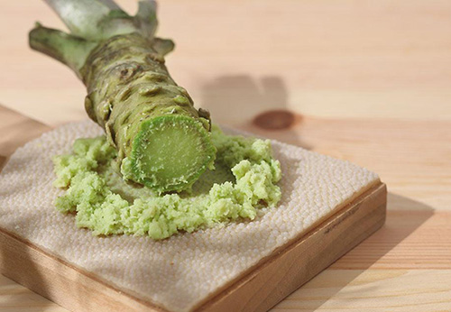

芥末是什么做的,芥末的功效与作用
时间：2018/10/27 | 浏览： | 来源：饮食web
芥末也叫做芥子末，是一种带着辛辣味的调料，常见于日本料理，比如吃生鱼片时是最常见的，在韩国料理中经常用来泡菜调料，我们中国也经常用来腌制鱼肉类，去腥有着很有效的作用。

芥末是什么做的
芥末分两种，一种是黄色的，另一种是绿色的，芥末来自于中国，是芥菜的种子研磨而成；绿芥末(青芥辣)源于欧洲，用辣根(马萝卜）制造，添加色素后呈绿色，其辛辣气味强于黄芥末，且有一种独特的香气。
芥末是什么味道的
微苦，辛辣芳香，对口舌有强烈刺激，味道十分独特，芥末粉润湿后有香气喷出，具有催泪性的强烈刺激性辣味，对味觉、嗅觉均有刺激作用。
芥末的功效与作用
芥末辣味强烈，可刺激唾液和胃液的分泌，能增强食欲。芥末中的硫氰酸盐成分可预防蛀牙，对预防癌症、防止血管凝块、治疗气喘等也有一定的效果。芥末还有预防高脂血、高血压、心脏病、降低血液黏稠度等功效。芥末油还有美容养颜功效。
芥末的主要辣味成分是芥子油，其辣味强烈，可刺激唾液和胃液的分泌，有开胃之功，增强人的食欲。芥末对减少血液黏稠度、治疗气喘、预防蛀牙等也有一定的效果。芥末油还有美容养颜的功效，在美体业界，芥末油是很好的按摩油。
在芥末中添加些糖或食醋，能缓冲辣味，使其风味更佳。当芥末有油脂渗出并变苦时就不宜继续食用。
⒈芥末有很强的杀菌功能，可以起到杀菌和消灭消化系统寄生虫的作用，故生食三文鱼等海鲜食品经常会配上芥末。
⒉芥末呛鼻的主要成分是异硫氰酸盐，这种成分不但可以预防蛀牙，对预防癌症，防止血管凝块，治疗气喘等也有一定效果，同时还具有发汗、利尿、解毒、清血等食疗功效；对增进食欲、促进血液循环也有不错的帮助作用。
⒊芥末可用来治疗风湿性疾病，调节月经。古代人们在洗澡时使用芥末用于治疗麻疹；与面粉调和成糊状可用来治疗咳嗽或支气管炎。
⒋芥末还有预防高血脂、高血压、心脏病、减少血液黏稠度等功效。
⒌芥末油有美容养颜的功效。在美体界，芥末油是很好的按摩油。
⒍芥末还具有除臭效果和预防因生活习惯而产生的疾病的效果。芥末溶于适量的水还可以起到抑制、清除霉菌的作用，这个做法可以说是日常生活中的一个除霉的小妙招。
⒎食疗作用：芥末性温，味辛；有解毒消肿，开胃消食，温中利气，明目利膈的功效；主治疮痈肿痛、耳目失聪、牙龈肿烂、寒腹痛、便秘等病症；治喉痛声哑，腌陈芥菜干50克，开水冲泡频饮（或含漱）。
⒏芥末辣味强烈，具有较强的刺激作用，可以调节女性内分泌，增强性功能，还能刺激血管扩张，增强面部气血运行，使女性脸色更红润。
芥末的食用指南
1.芥末具有强烈的刺激性，有上火、眼睛红肿炎症、口角糜烂、尿黄、牙痛、咽喉痛等身体不适者不宜食用。
2.高血脂、高血压、心脏病患者可适量食用。
3.孕妇、胃炎、消化道溃疡患者忌食。
4.日常生活中通常使用的是芥末粉或芥末酱，以色正味冲、无杂质者为佳品，芥末不宜长期存放，芥末酱和芥末膏置于常温下密封存储，避光防潮，保质期在6个月左右，当芥末有油脂渗出并变苦时就不宜继续食用。
饮食web原创文章，未获本站允许，请勿转载，本站宗旨在于分享生活知识，打造健康人生。
- 上一篇：淮盐
- 下一篇：没有了
相关阅读

夏日开胃美食：芥末山药的做法
时间 06-18 浏览
178
芥末知识大全：芥末籽、芥末粉、芥末酱
时间 04-22
浏览 460
做沙拉的酱：蜂蜜芥末籽优格酱的做法
时间 05-17 浏览
261
自制青梅酒：只要青梅和砂糖就可以酿出美酒
时间 11-12
浏览 4314
鲜香菇干香菇如何挑选，挑选香菇的技巧
时间 08-01
浏览 3747
西餐餐具摆法，西餐的餐具怎么摆放(图文)
时间 06-29
浏览 3945